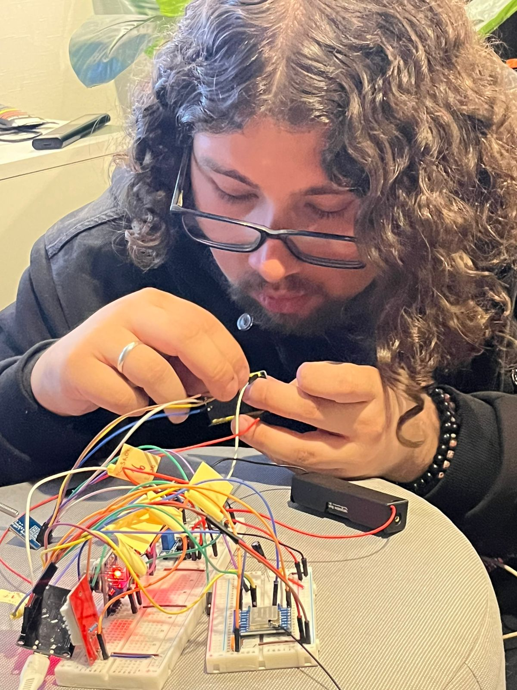
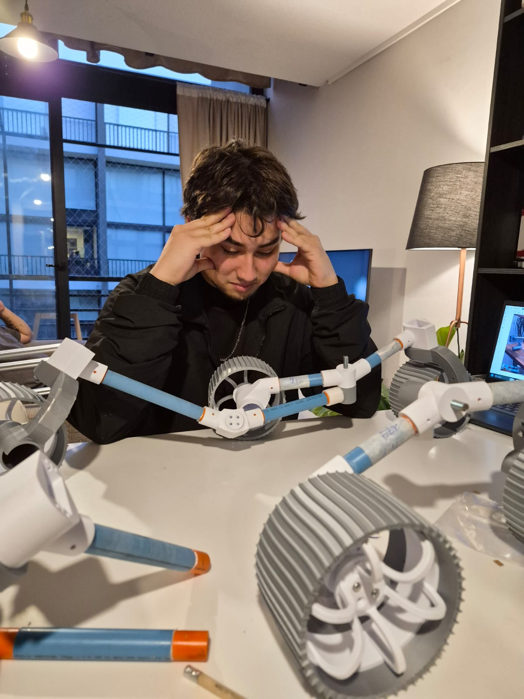

El primer paso práctico en el diseño de satélites. En un volumen estandarizado de 1 Unidad (10×10×10 cm) o formato CanSat, los estudiantes aprenden a condensar computadores de a bordo, sensores ambientales, sistemas de energía por batería y radioenlace de telemetría hacia nuestra estación terrena.
Mitigar la curva de aprendizaje para nuevos miembros antes de entrar al CubeSat 3U.
Microcontrolador con lectura síncrona en bus I2C/SPI y almacenamiento en tarjeta SD.
Frecuencia continua para registrar aceleraciones dinámicas y perfiles barométricos.
Chasis modular con soporte de tarjetas apilables y rieles de acople rápido.
Enlace de radiofrecuencia de bajo consumo para seguimiento en vivo desde tierra.
Mientras otros ven un satélite como una caja metálica, en el USACH Space Program aprendemos a diseñar su sistema nervioso. El proyecto Mini-CubeSat 1U desafía a los estudiantes a integrar electrónica compleja en un espacio similar al de una lata o cubo de 10 cm. Aprender a resolver interferencias electromagnéticas, optimizar cables y distribuir el consumo energético es la mejor escuela para la ingeniería satelital real.
Cada subsistema se valida primero de manera aislada antes de conectarse al bus común de alimentación y datos.

Para poner a prueba la resistencia de nuestros circuitos sin el costo prohibitivo de un cohete orbital, proyectamos misiones en globos sonda estratosféricos. A más de 20.000 metros de altitud, el Mini-CubeSat se expone a temperaturas inferiores a -50°C, presiones atmosféricas residuales de menos del 1% y radiación solar directa, condiciones muy similares a la superficie de Marte o la órbita baja.
Las pruebas en frío extremo nos enseñan a seleccionar químicas de batería tolerantes y a aislar componentes críticos.

Los instrumentos científicos que viajan a bordo de la plataforma 1U.

Sensor BMP280 de alta resolución para calcular altitud barométrica instantánea y sensores de temperatura interna para monitorear el calentamiento del procesador.

Acelerómetro, giroscopio y magnetómetro integrados para registrar las rotaciones del satélite, oscilaciones en caída y el campo magnético circundante.

Módem digital LoRa que transmite paquetes de datos con comprobación de errores (CRC) hacia la computadora de seguimiento en tierra cada 1 segundo.
Ruta de aprendizaje guiada para integrarse al desarrollo de hardware espacial.
Aprender el uso del cautín, lectura de esquemáticos electrónicos y cableado limpio de microcontroladores sin cortocircuitos.
Programación de librerías para extraer mediciones, calibrar offsets y empaquetar variables en tramas de bytes eficientes.
Modelado del marco 1U en CAD y manufactura aditiva con materiales resistentes a vibraciones mecánicas.
Despliegue con paracaídas, recepción de la baliza de radio en tierra y análisis de los datos gráficos recopilados.
La iniciativa Mini-CubeSat 1U es el espacio formativo ideal para estudiantes que se inician en la ingeniería aeroespacial. Te acompañamos en cada etapa de diseño y programación.
Ponte en Contacto con Nosotros ✉